Index data for IDX1_JAPAN_LL. Lines indicate 95% uncertainty interval around index values based on the model assumption of lognormal error. Thicker lines (if present) indicate input uncertainty before addition of estimated additional uncertainty parameter.
file: index1_cpuedata_IDX1_JAPAN_LL.png

Fit to index data for IDX1_JAPAN_LL. Lines indicate 95% uncertainty interval around index values based on the model assumption of lognormal error. Thicker lines (if present) indicate input uncertainty before addition of estimated additional uncertainty parameter.
file: index2_cpuefit_IDX1_JAPAN_LL.png
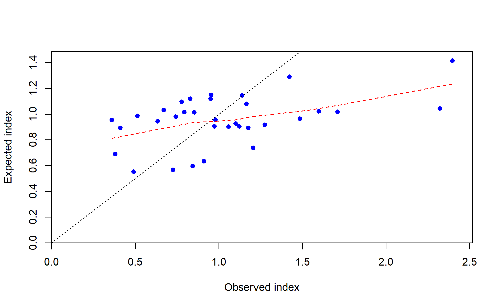
Observed vs. expected index values with smoother for IDX1_JAPAN_LL
file: index3_obs_vs_exp_IDX1_JAPAN_LL.png

Log index data for IDX1_JAPAN_LL. Lines indicate 95% uncertainty interval around index values based on the model assumption of lognormal error. Thicker lines (if present) indicate input uncertainty before addition of estimated additional uncertainty parameter.
file: index4_logcpuedata_IDX1_JAPAN_LL.png
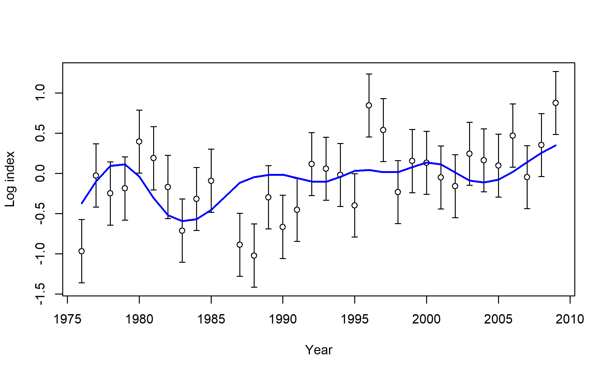
Fit to log index data on log scale for IDX1_JAPAN_LL. Lines indicate 95% uncertainty interval around index values based on the model assumption of lognormal error. Thicker lines (if present) indicate input uncertainty before addition of estimated additional uncertainty parameter.
file: index5_logcpuefit_IDX1_JAPAN_LL.png
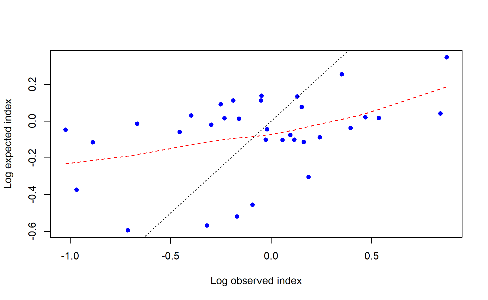
log(observed) vs. log(expected) index values with smoother for IDX1_JAPAN_LL
file: index6_log_obs_vs_exp_IDX1_JAPAN_LL.png
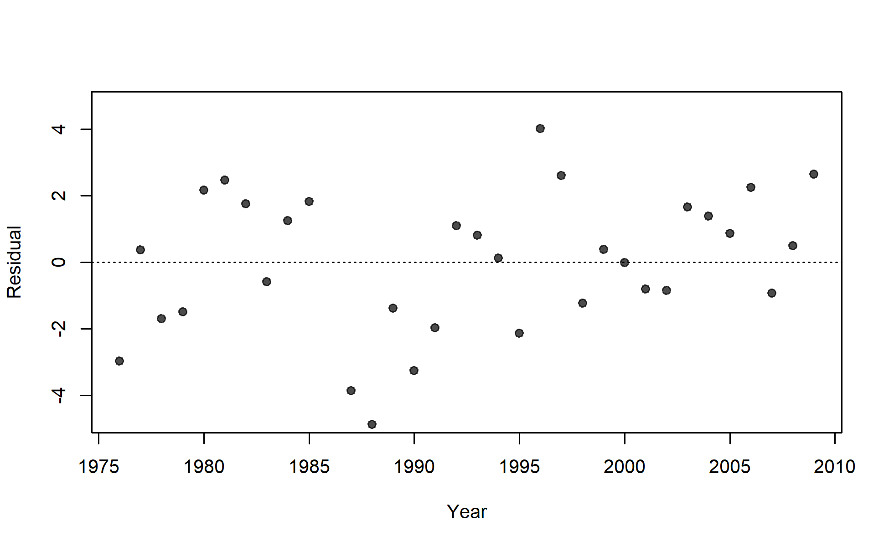
Residuals of fit to index for IDX1_JAPAN_LL.
Values are (log(Obs) - log(Exp))/SE where SE is the total standard error including any estimated additional uncertainty.
file: index10_resids_SE_total_IDX1_JAPAN_LL.png
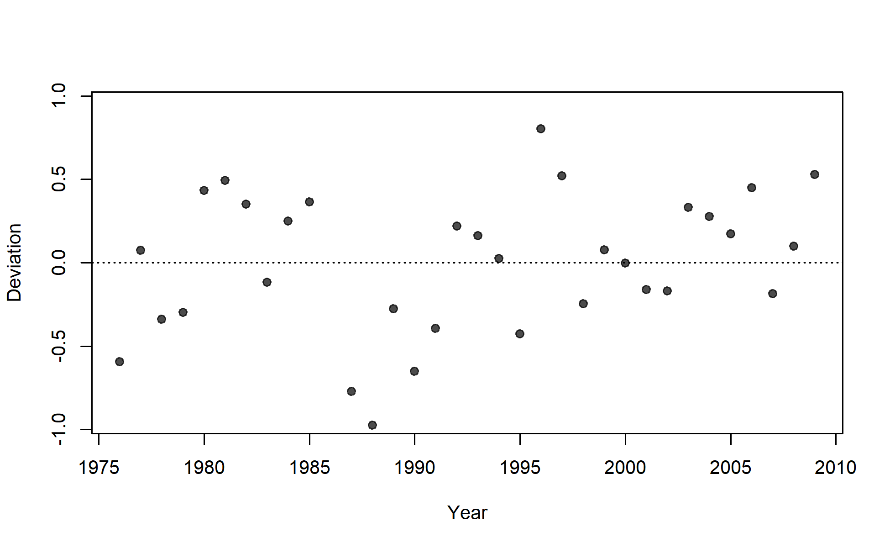
Deviations for fit to index for IDX1_JAPAN_LL.
Values are log(Obs) - log(Exp) and thus independent of index uncertainty.
file: index12_resids_SE_total_IDX1_JAPAN_LL.png

Index data for IDX2_JAPAN_LL2. Lines indicate 95% uncertainty interval around index values based on the model assumption of lognormal error. Thicker lines (if present) indicate input uncertainty before addition of estimated additional uncertainty parameter.
file: index1_cpuedata_IDX2_JAPAN_LL2.png
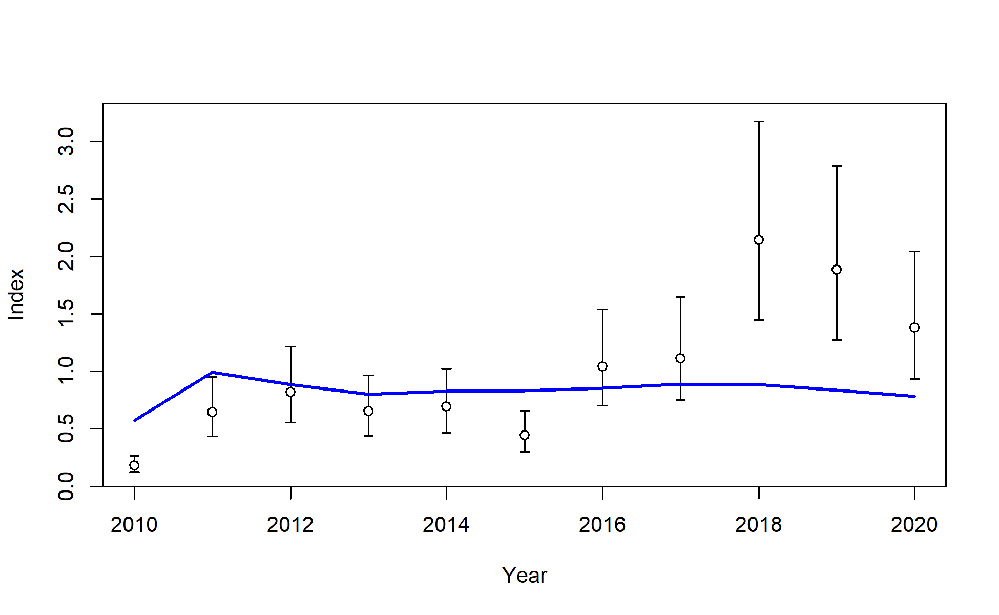
Fit to index data for IDX2_JAPAN_LL2. Lines indicate 95% uncertainty interval around index values based on the model assumption of lognormal error. Thicker lines (if present) indicate input uncertainty before addition of estimated additional uncertainty parameter.
file: index2_cpuefit_IDX2_JAPAN_LL2.png
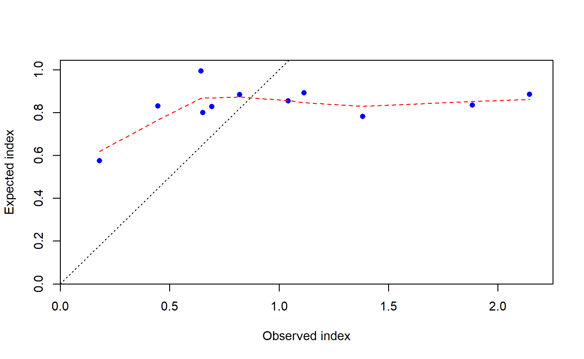
Observed vs. expected index values with smoother for IDX2_JAPAN_LL2
file: index3_obs_vs_exp_IDX2_JAPAN_LL2.png

Log index data for IDX2_JAPAN_LL2. Lines indicate 95% uncertainty interval around index values based on the model assumption of lognormal error. Thicker lines (if present) indicate input uncertainty before addition of estimated additional uncertainty parameter.
file: index4_logcpuedata_IDX2_JAPAN_LL2.png
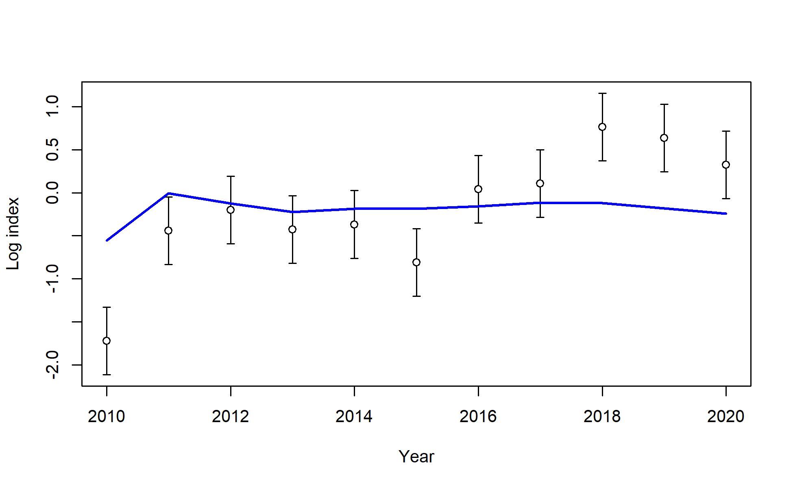
Fit to log index data on log scale for IDX2_JAPAN_LL2. Lines indicate 95% uncertainty interval around index values based on the model assumption of lognormal error. Thicker lines (if present) indicate input uncertainty before addition of estimated additional uncertainty parameter.
file: index5_logcpuefit_IDX2_JAPAN_LL2.png
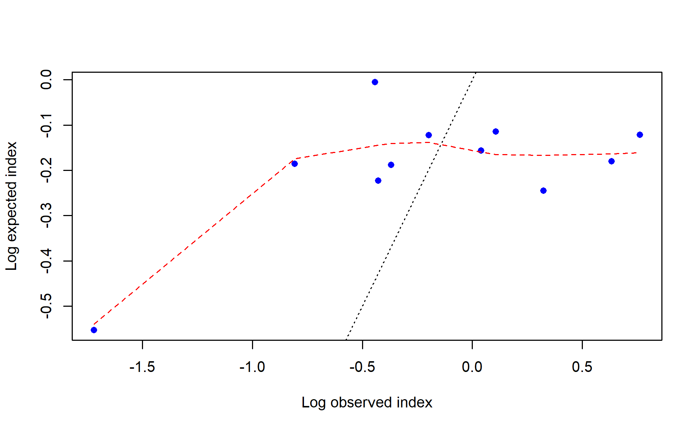
log(observed) vs. log(expected) index values with smoother for IDX2_JAPAN_LL2
file: index6_log_obs_vs_exp_IDX2_JAPAN_LL2.png

Residuals of fit to index for IDX2_JAPAN_LL2.
Values are (log(Obs) - log(Exp))/SE where SE is the total standard error including any estimated additional uncertainty.
file: index10_resids_SE_total_IDX2_JAPAN_LL2.png
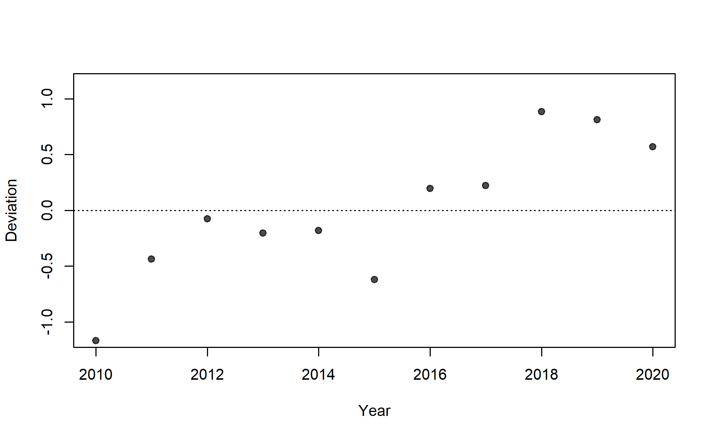
Deviations for fit to index for IDX2_JAPAN_LL2.
Values are log(Obs) - log(Exp) and thus independent of index uncertainty.
file: index12_resids_SE_total_IDX2_JAPAN_LL2.png

Index data for IDX5_MEXUSLL_GOM_LL. Lines indicate 95% uncertainty interval around index values based on the model assumption of lognormal error. Thicker lines (if present) indicate input uncertainty before addition of estimated additional uncertainty parameter.
file: index1_cpuedata_IDX5_MEXUSLL_GOM_LL.png

Fit to index data for IDX5_MEXUSLL_GOM_LL. Lines indicate 95% uncertainty interval around index values based on the model assumption of lognormal error. Thicker lines (if present) indicate input uncertainty before addition of estimated additional uncertainty parameter.
file: index2_cpuefit_IDX5_MEXUSLL_GOM_LL.png
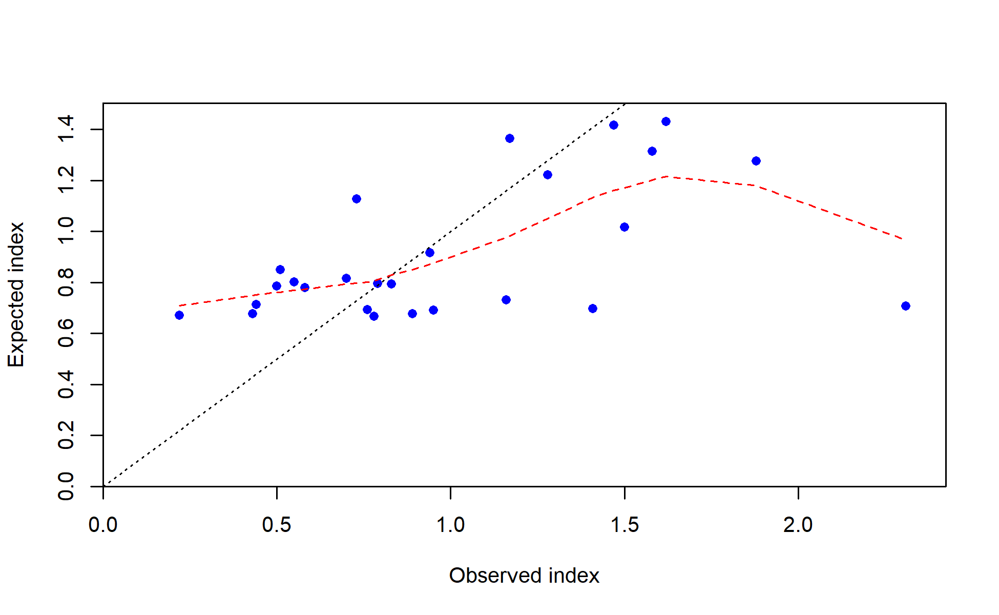
Observed vs. expected index values with smoother for IDX5_MEXUSLL_GOM_LL
file: index3_obs_vs_exp_IDX5_MEXUSLL_GOM_LL.png

Log index data for IDX5_MEXUSLL_GOM_LL. Lines indicate 95% uncertainty interval around index values based on the model assumption of lognormal error. Thicker lines (if present) indicate input uncertainty before addition of estimated additional uncertainty parameter.
file: index4_logcpuedata_IDX5_MEXUSLL_GOM_LL.png
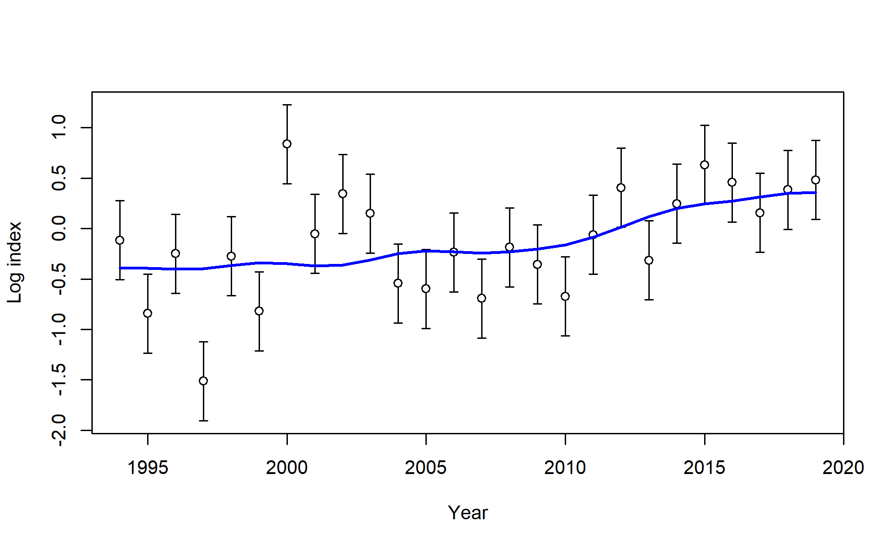
Fit to log index data on log scale for IDX5_MEXUSLL_GOM_LL. Lines indicate 95% uncertainty interval around index values based on the model assumption of lognormal error. Thicker lines (if present) indicate input uncertainty before addition of estimated additional uncertainty parameter.
file: index5_logcpuefit_IDX5_MEXUSLL_GOM_LL.png
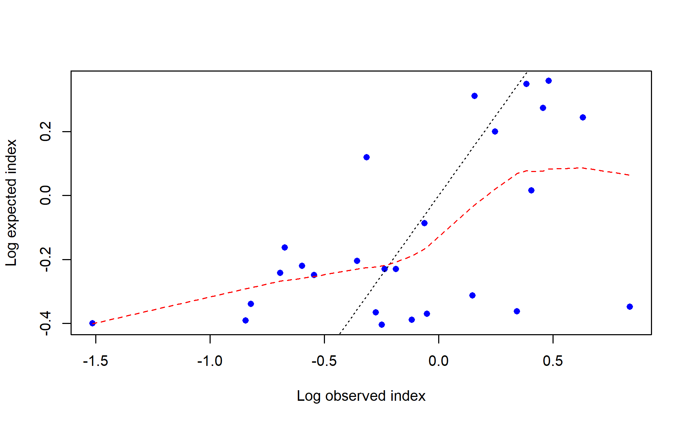
log(observed) vs. log(expected) index values with smoother for IDX5_MEXUSLL_GOM_LL
file: index6_log_obs_vs_exp_IDX5_MEXUSLL_GOM_LL.png
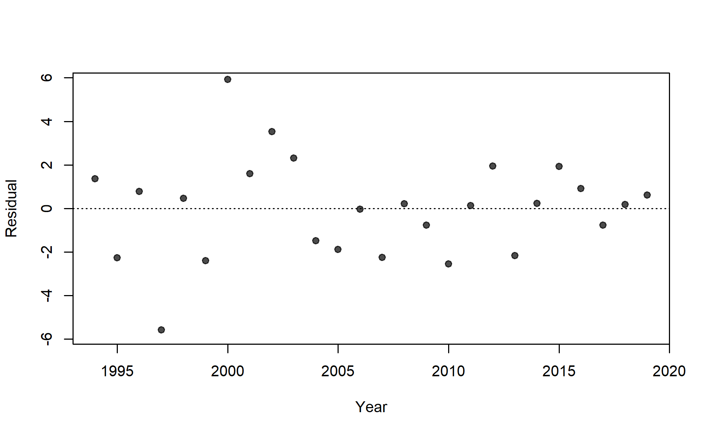
Residuals of fit to index for IDX5_MEXUSLL_GOM_LL.
Values are (log(Obs) - log(Exp))/SE where SE is the total standard error including any estimated additional uncertainty.
file: index10_resids_SE_total_IDX5_MEXUSLL_GOM_LL.png
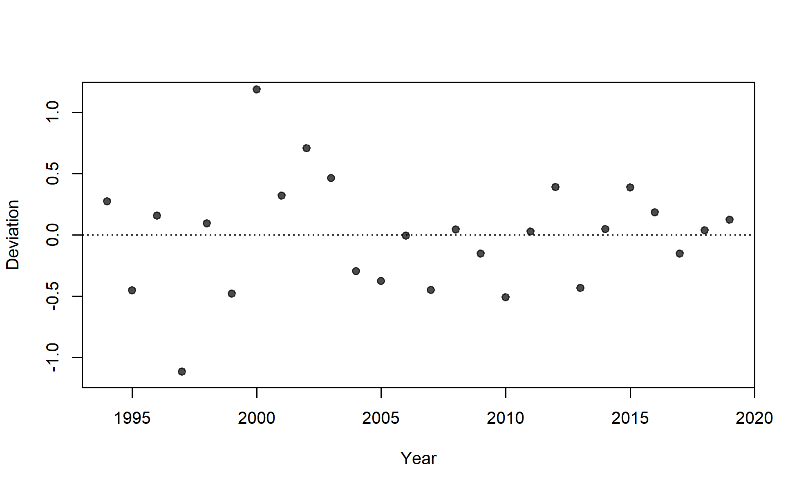
Deviations for fit to index for IDX5_MEXUSLL_GOM_LL.
Values are log(Obs) - log(Exp) and thus independent of index uncertainty.
file: index12_resids_SE_total_IDX5_MEXUSLL_GOM_LL.png

Index data for IDX6_JPNLL_GOM. Lines indicate 95% uncertainty interval around index values based on the model assumption of lognormal error. Thicker lines (if present) indicate input uncertainty before addition of estimated additional uncertainty parameter.
file: index1_cpuedata_IDX6_JPNLL_GOM.png
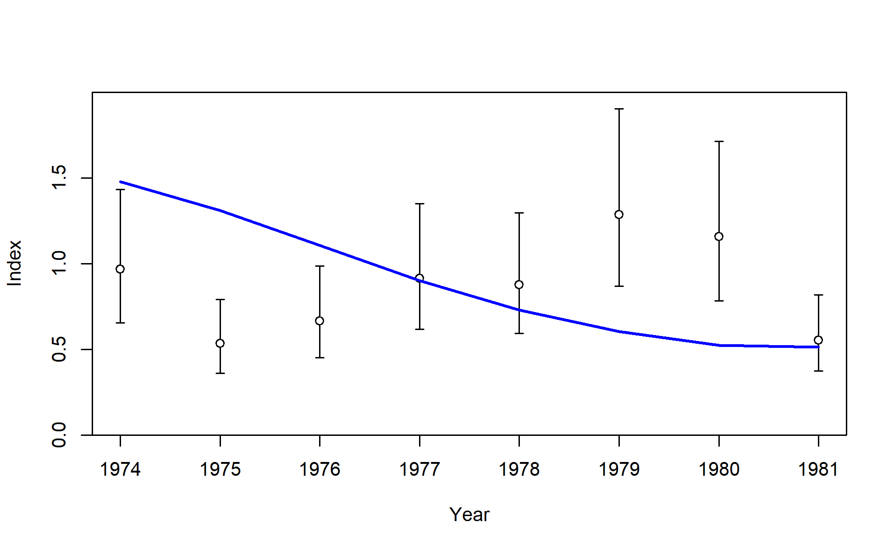
Fit to index data for IDX6_JPNLL_GOM. Lines indicate 95% uncertainty interval around index values based on the model assumption of lognormal error. Thicker lines (if present) indicate input uncertainty before addition of estimated additional uncertainty parameter.
file: index2_cpuefit_IDX6_JPNLL_GOM.png
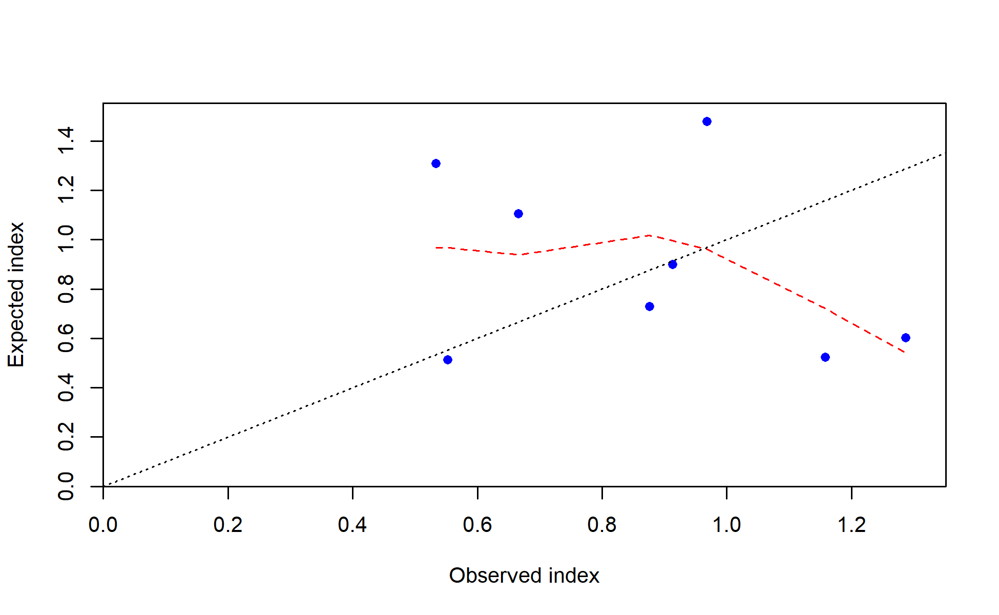
Observed vs. expected index values with smoother for IDX6_JPNLL_GOM
file: index3_obs_vs_exp_IDX6_JPNLL_GOM.png

Log index data for IDX6_JPNLL_GOM. Lines indicate 95% uncertainty interval around index values based on the model assumption of lognormal error. Thicker lines (if present) indicate input uncertainty before addition of estimated additional uncertainty parameter.
file: index4_logcpuedata_IDX6_JPNLL_GOM.png
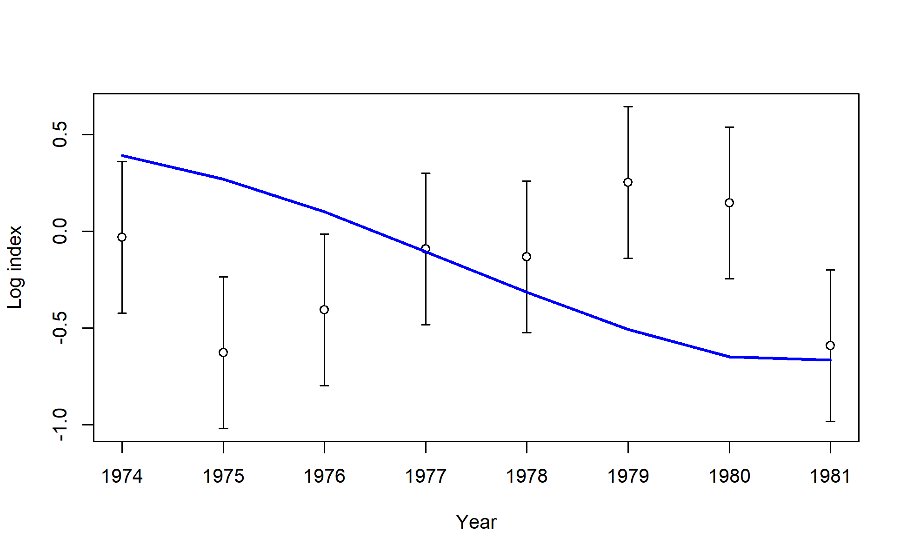
Fit to log index data on log scale for IDX6_JPNLL_GOM. Lines indicate 95% uncertainty interval around index values based on the model assumption of lognormal error. Thicker lines (if present) indicate input uncertainty before addition of estimated additional uncertainty parameter.
file: index5_logcpuefit_IDX6_JPNLL_GOM.png
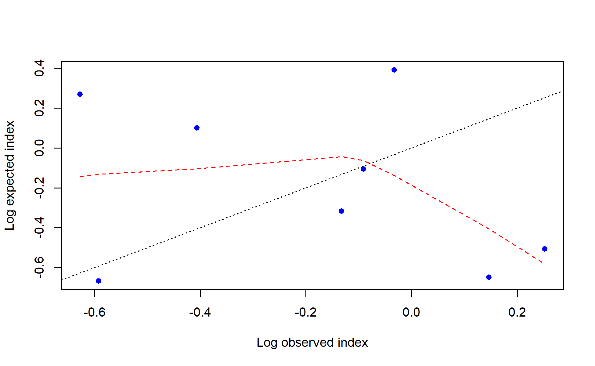
log(observed) vs. log(expected) index values with smoother for IDX6_JPNLL_GOM
file: index6_log_obs_vs_exp_IDX6_JPNLL_GOM.png
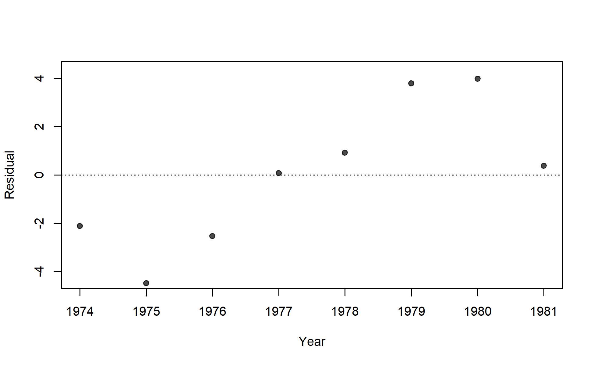
Residuals of fit to index for IDX6_JPNLL_GOM.
Values are (log(Obs) - log(Exp))/SE where SE is the total standard error including any estimated additional uncertainty.
file: index10_resids_SE_total_IDX6_JPNLL_GOM.png
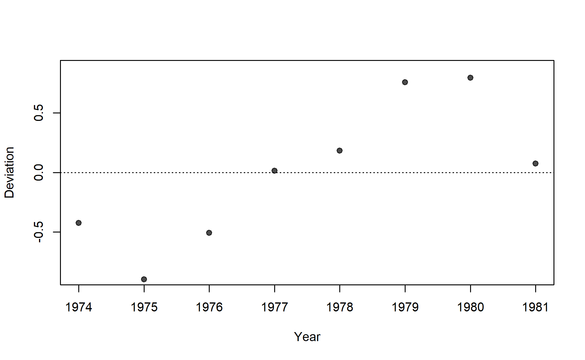
Deviations for fit to index for IDX6_JPNLL_GOM.
Values are log(Obs) - log(Exp) and thus independent of index uncertainty.
file: index12_resids_SE_total_IDX6_JPNLL_GOM.png

Index data for IDX9_US_RR_66_144. Lines indicate 95% uncertainty interval around index values based on the model assumption of lognormal error. Thicker lines (if present) indicate input uncertainty before addition of estimated additional uncertainty parameter.
file: index1_cpuedata_IDX9_US_RR_66_144.png
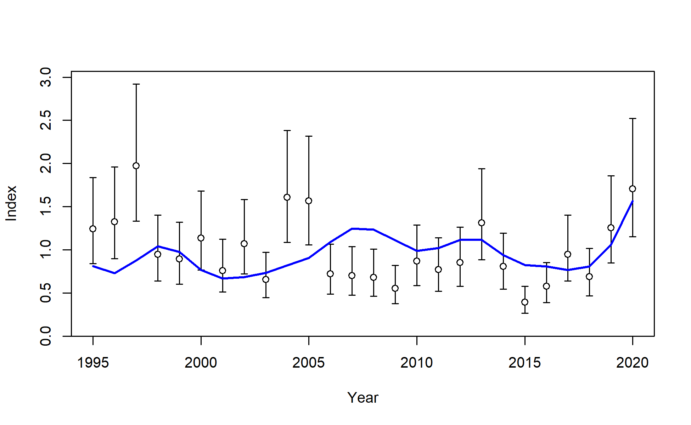
Fit to index data for IDX9_US_RR_66_144. Lines indicate 95% uncertainty interval around index values based on the model assumption of lognormal error. Thicker lines (if present) indicate input uncertainty before addition of estimated additional uncertainty parameter.
file: index2_cpuefit_IDX9_US_RR_66_144.png
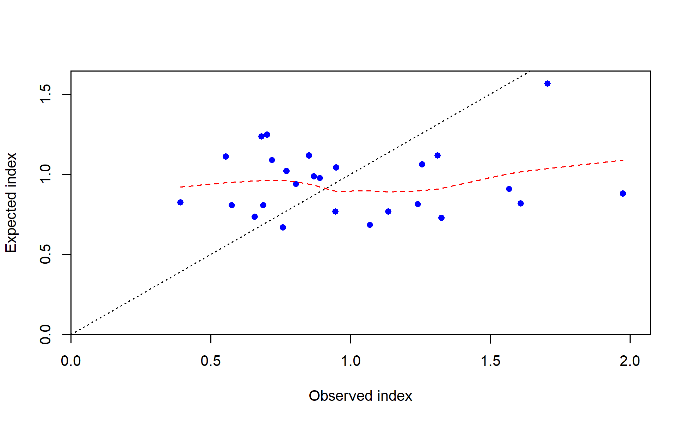
Observed vs. expected index values with smoother for IDX9_US_RR_66_144
file: index3_obs_vs_exp_IDX9_US_RR_66_144.png

Log index data for IDX9_US_RR_66_144. Lines indicate 95% uncertainty interval around index values based on the model assumption of lognormal error. Thicker lines (if present) indicate input uncertainty before addition of estimated additional uncertainty parameter.
file: index4_logcpuedata_IDX9_US_RR_66_144.png
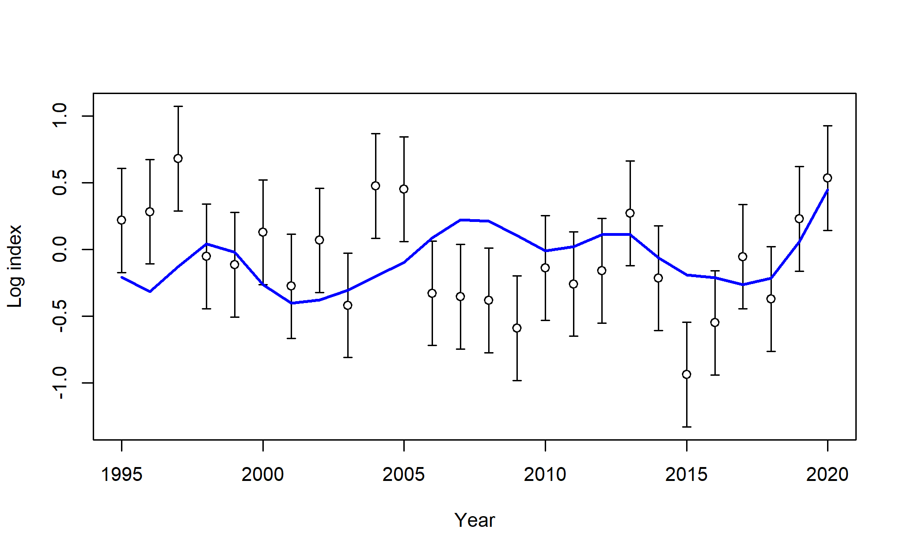
Fit to log index data on log scale for IDX9_US_RR_66_144. Lines indicate 95% uncertainty interval around index values based on the model assumption of lognormal error. Thicker lines (if present) indicate input uncertainty before addition of estimated additional uncertainty parameter.
file: index5_logcpuefit_IDX9_US_RR_66_144.png
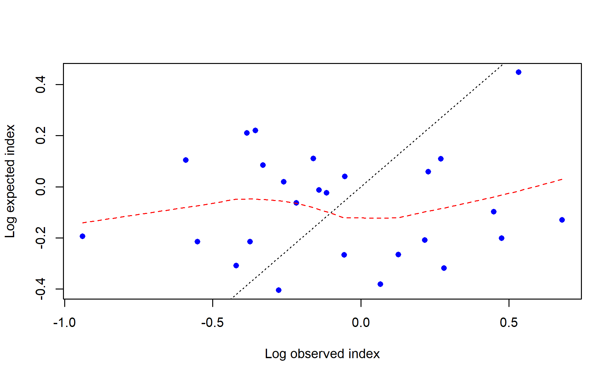
log(observed) vs. log(expected) index values with smoother for IDX9_US_RR_66_144
file: index6_log_obs_vs_exp_IDX9_US_RR_66_144.png
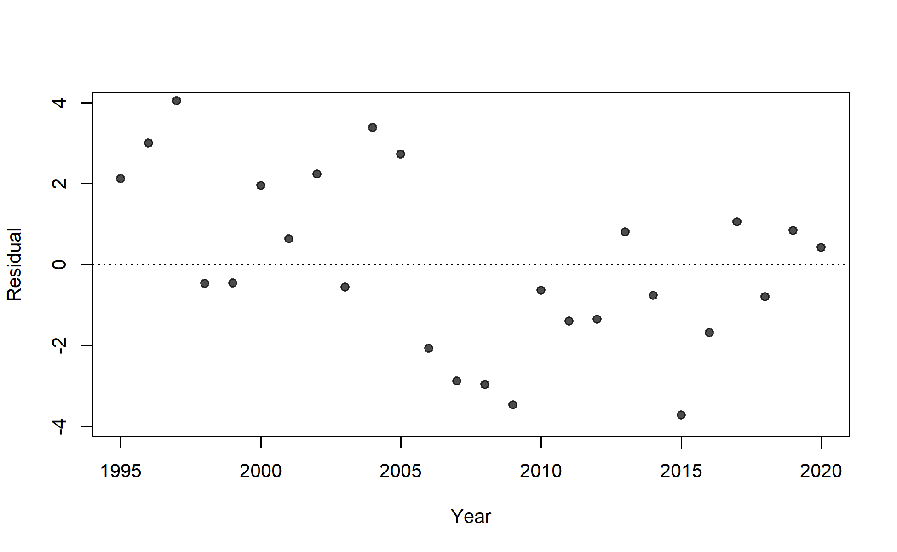
Residuals of fit to index for IDX9_US_RR_66_144.
Values are (log(Obs) - log(Exp))/SE where SE is the total standard error including any estimated additional uncertainty.
file: index10_resids_SE_total_IDX9_US_RR_66_144.png
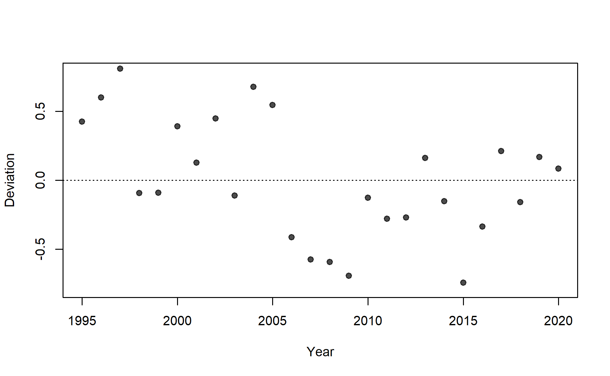
Deviations for fit to index for IDX9_US_RR_66_144.
Values are log(Obs) - log(Exp) and thus independent of index uncertainty.
file: index12_resids_SE_total_IDX9_US_RR_66_144.png
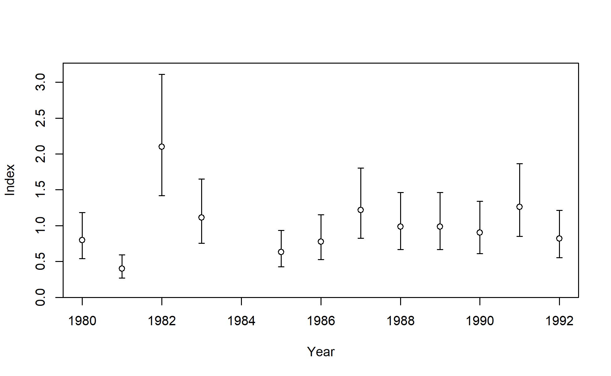
Index data for IDX10_US_RR_LT145. Lines indicate 95% uncertainty interval around index values based on the model assumption of lognormal error. Thicker lines (if present) indicate input uncertainty before addition of estimated additional uncertainty parameter.
file: index1_cpuedata_IDX10_US_RR_LT145.png
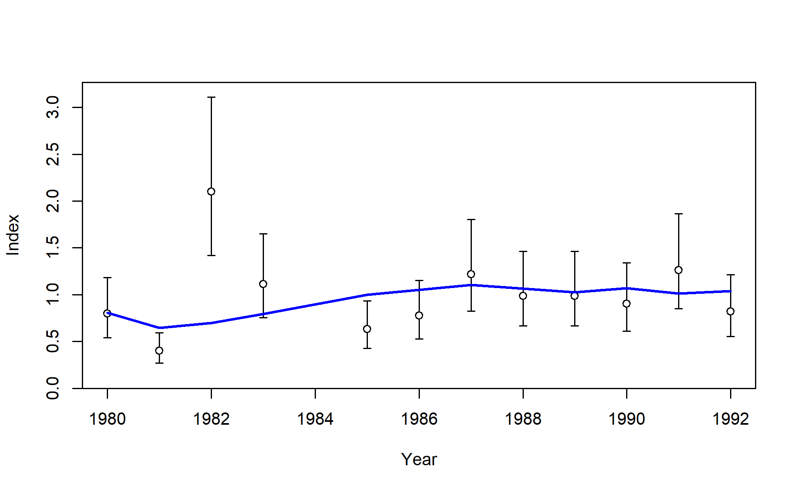
Fit to index data for IDX10_US_RR_LT145. Lines indicate 95% uncertainty interval around index values based on the model assumption of lognormal error. Thicker lines (if present) indicate input uncertainty before addition of estimated additional uncertainty parameter.
file: index2_cpuefit_IDX10_US_RR_LT145.png
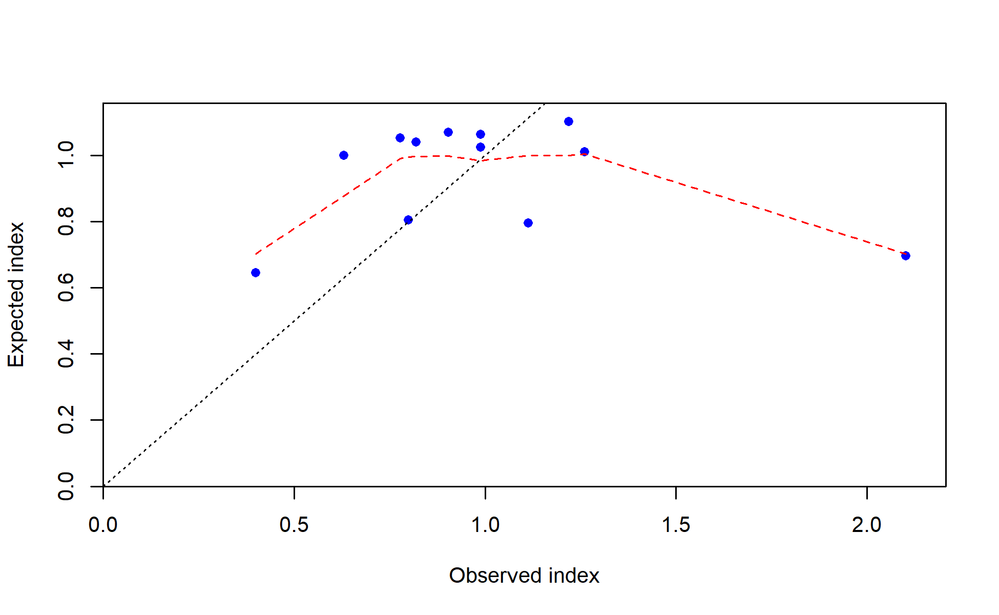
Observed vs. expected index values with smoother for IDX10_US_RR_LT145
file: index3_obs_vs_exp_IDX10_US_RR_LT145.png

Log index data for IDX10_US_RR_LT145. Lines indicate 95% uncertainty interval around index values based on the model assumption of lognormal error. Thicker lines (if present) indicate input uncertainty before addition of estimated additional uncertainty parameter.
file: index4_logcpuedata_IDX10_US_RR_LT145.png
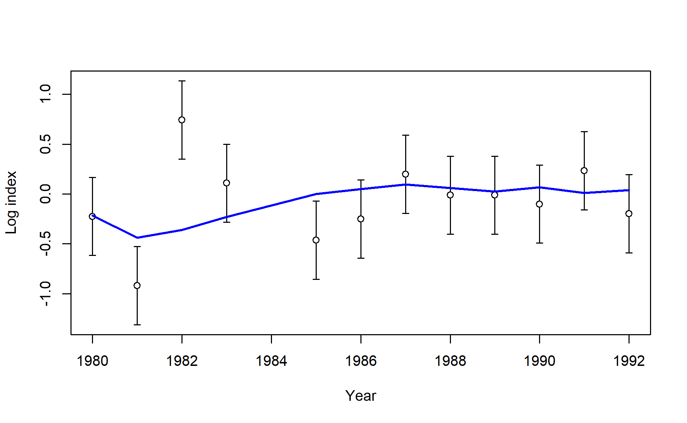
Fit to log index data on log scale for IDX10_US_RR_LT145. Lines indicate 95% uncertainty interval around index values based on the model assumption of lognormal error. Thicker lines (if present) indicate input uncertainty before addition of estimated additional uncertainty parameter.
file: index5_logcpuefit_IDX10_US_RR_LT145.png
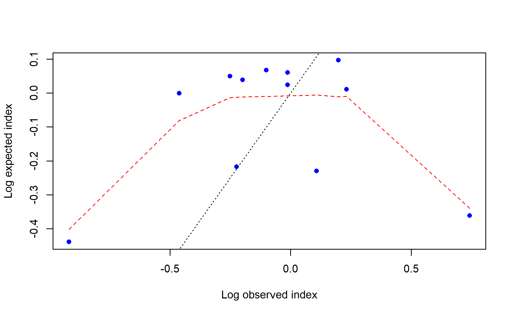
log(observed) vs. log(expected) index values with smoother for IDX10_US_RR_LT145
file: index6_log_obs_vs_exp_IDX10_US_RR_LT145.png
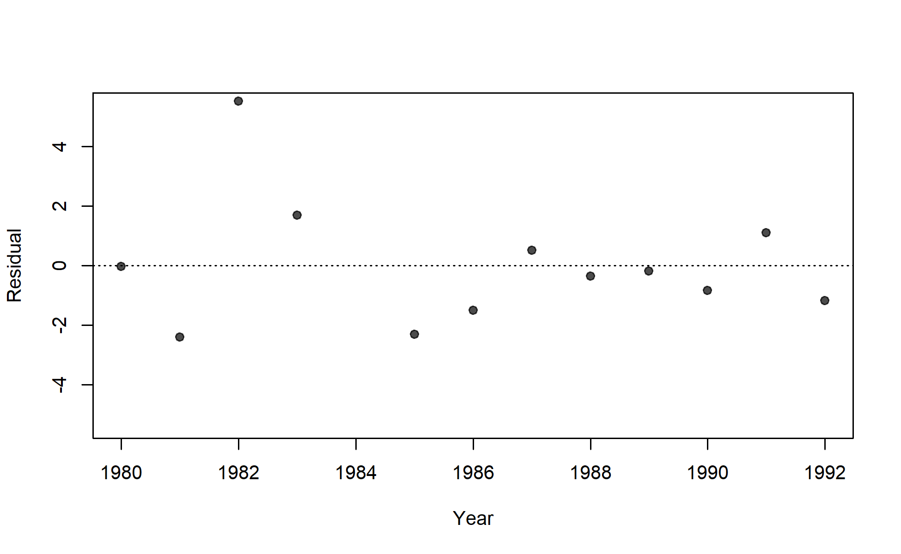
Residuals of fit to index for IDX10_US_RR_LT145.
Values are (log(Obs) - log(Exp))/SE where SE is the total standard error including any estimated additional uncertainty.
file: index10_resids_SE_total_IDX10_US_RR_LT145.png
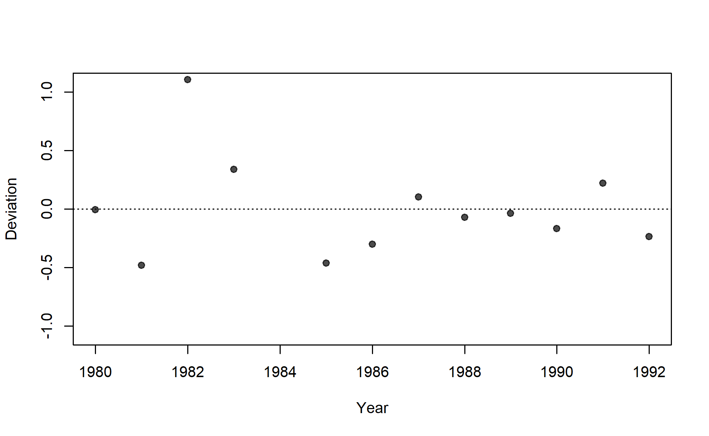
Deviations for fit to index for IDX10_US_RR_LT145.
Values are log(Obs) - log(Exp) and thus independent of index uncertainty.
file: index12_resids_SE_total_IDX10_US_RR_LT145.png

Index data for IDX12_US_RR_GT195. Lines indicate 95% uncertainty interval around index values based on the model assumption of lognormal error. Thicker lines (if present) indicate input uncertainty before addition of estimated additional uncertainty parameter.
file: index1_cpuedata_IDX12_US_RR_GT195.png
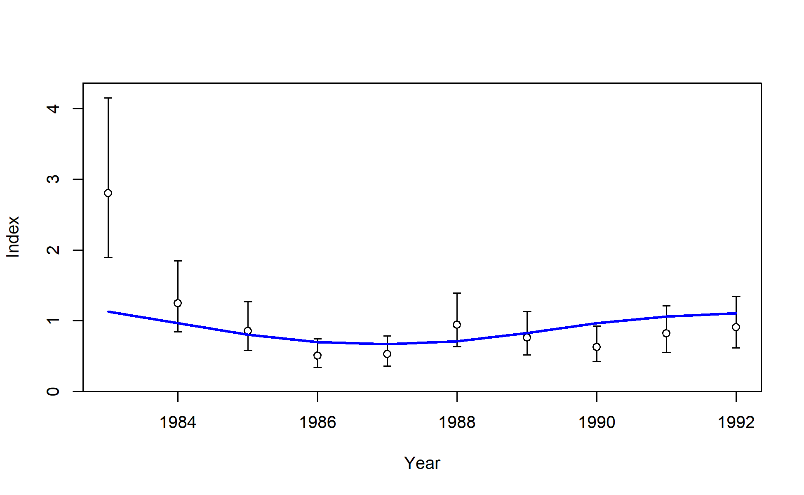
Fit to index data for IDX12_US_RR_GT195. Lines indicate 95% uncertainty interval around index values based on the model assumption of lognormal error. Thicker lines (if present) indicate input uncertainty before addition of estimated additional uncertainty parameter.
file: index2_cpuefit_IDX12_US_RR_GT195.png
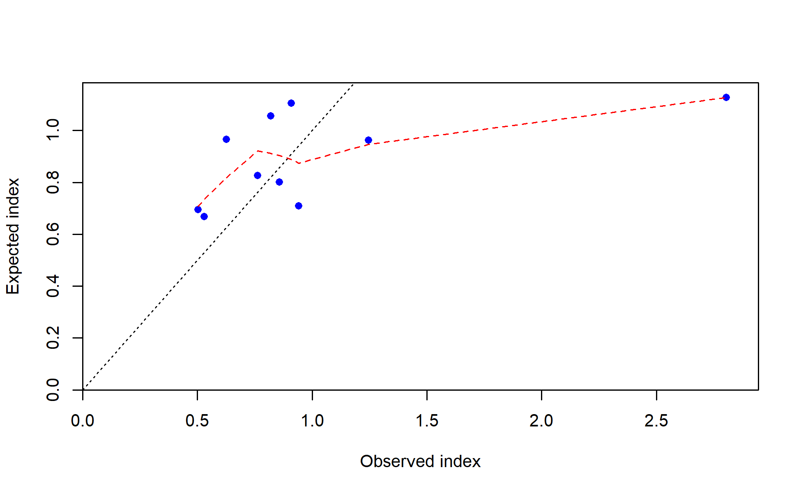
Observed vs. expected index values with smoother for IDX12_US_RR_GT195
file: index3_obs_vs_exp_IDX12_US_RR_GT195.png

Log index data for IDX12_US_RR_GT195. Lines indicate 95% uncertainty interval around index values based on the model assumption of lognormal error. Thicker lines (if present) indicate input uncertainty before addition of estimated additional uncertainty parameter.
file: index4_logcpuedata_IDX12_US_RR_GT195.png
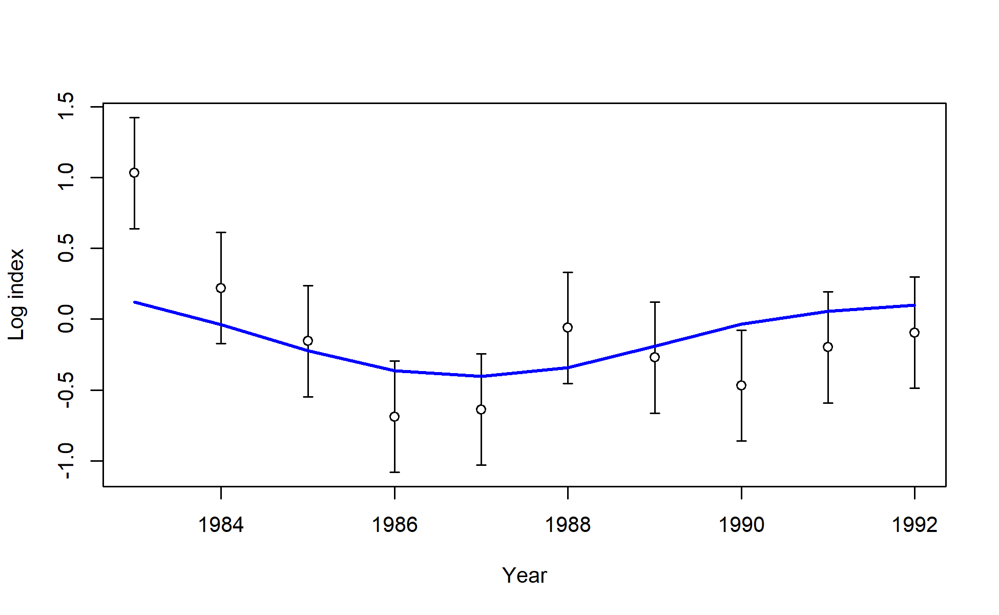
Fit to log index data on log scale for IDX12_US_RR_GT195. Lines indicate 95% uncertainty interval around index values based on the model assumption of lognormal error. Thicker lines (if present) indicate input uncertainty before addition of estimated additional uncertainty parameter.
file: index5_logcpuefit_IDX12_US_RR_GT195.png
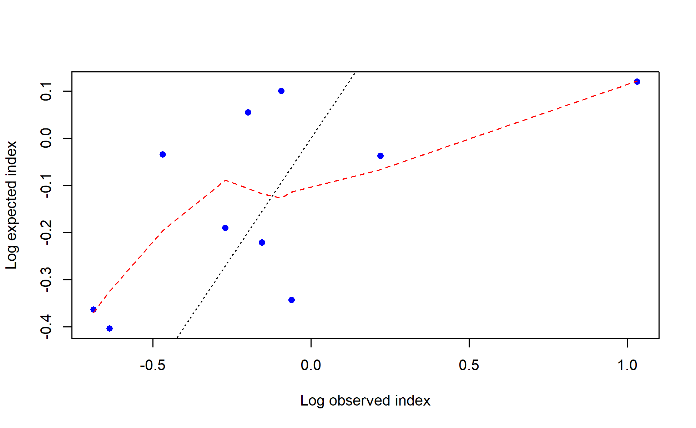
log(observed) vs. log(expected) index values with smoother for IDX12_US_RR_GT195
file: index6_log_obs_vs_exp_IDX12_US_RR_GT195.png
Residuals of fit to index for IDX12_US_RR_GT195.
Values are (log(Obs) - log(Exp))/SE where SE is the total standard error including any estimated additional uncertainty.
file: index10_resids_SE_total_IDX12_US_RR_GT195.png
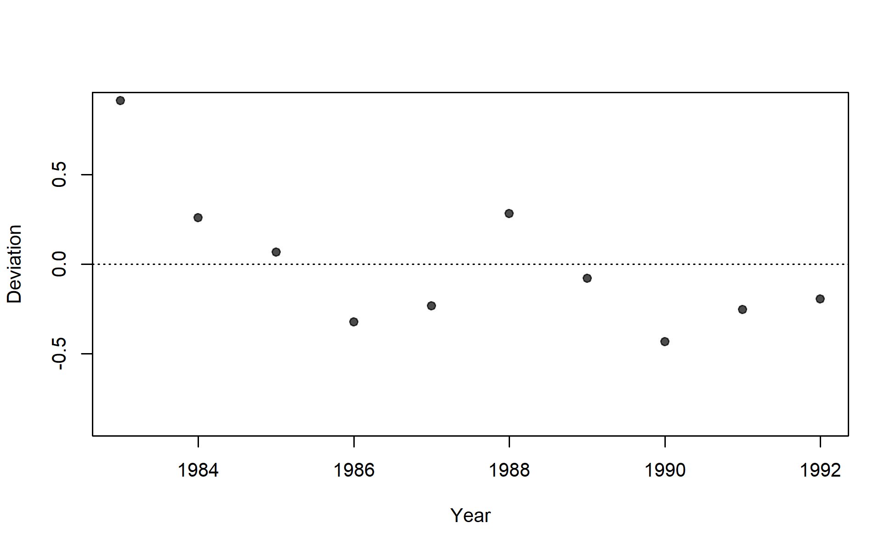
Deviations for fit to index for IDX12_US_RR_GT195.
Values are log(Obs) - log(Exp) and thus independent of index uncertainty.
file: index12_resids_SE_total_IDX12_US_RR_GT195.png

Index data for IDX15_CAN_GSL. Lines indicate 95% uncertainty interval around index values based on the model assumption of lognormal error. Thicker lines (if present) indicate input uncertainty before addition of estimated additional uncertainty parameter.
file: index1_cpuedata_IDX15_CAN_GSL.png
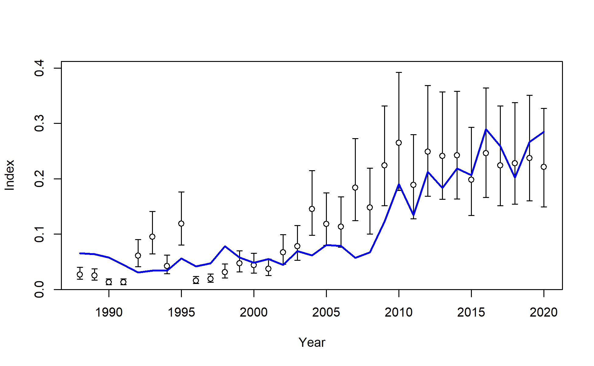
Fit to index data for IDX15_CAN_GSL. Lines indicate 95% uncertainty interval around index values based on the model assumption of lognormal error. Thicker lines (if present) indicate input uncertainty before addition of estimated additional uncertainty parameter.
file: index2_cpuefit_IDX15_CAN_GSL.png
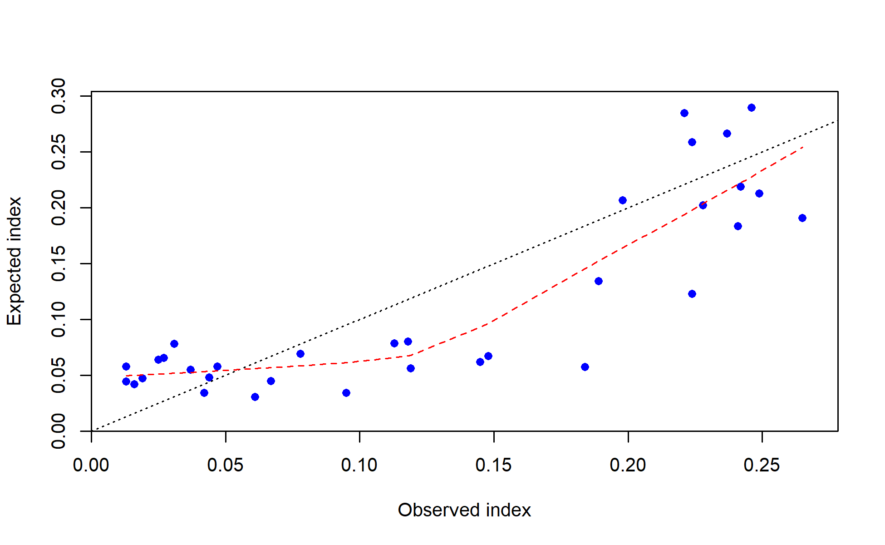
Observed vs. expected index values with smoother for IDX15_CAN_GSL
file: index3_obs_vs_exp_IDX15_CAN_GSL.png

Log index data for IDX15_CAN_GSL. Lines indicate 95% uncertainty interval around index values based on the model assumption of lognormal error. Thicker lines (if present) indicate input uncertainty before addition of estimated additional uncertainty parameter.
file: index4_logcpuedata_IDX15_CAN_GSL.png
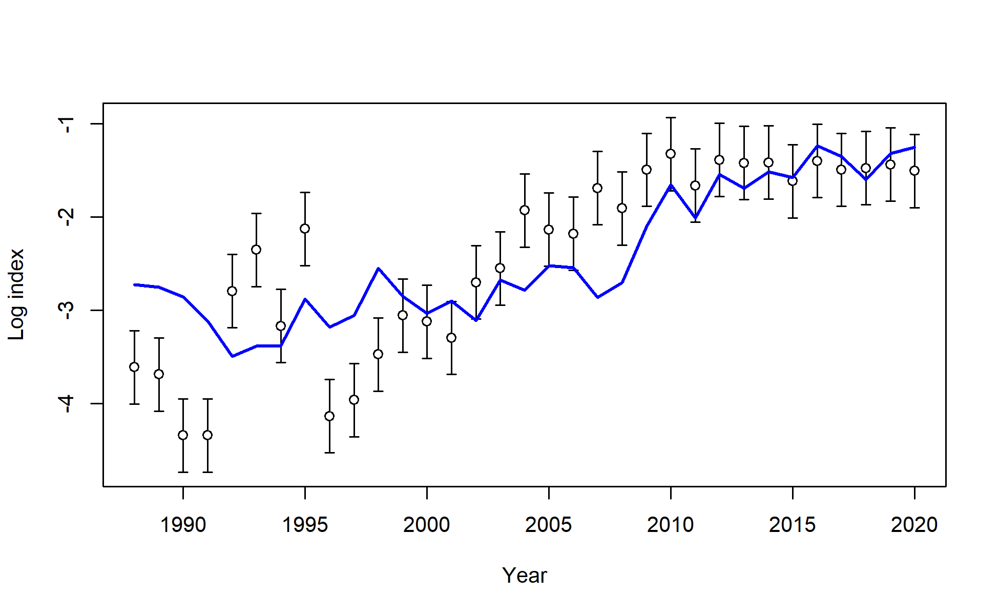
Fit to log index data on log scale for IDX15_CAN_GSL. Lines indicate 95% uncertainty interval around index values based on the model assumption of lognormal error. Thicker lines (if present) indicate input uncertainty before addition of estimated additional uncertainty parameter.
file: index5_logcpuefit_IDX15_CAN_GSL.png
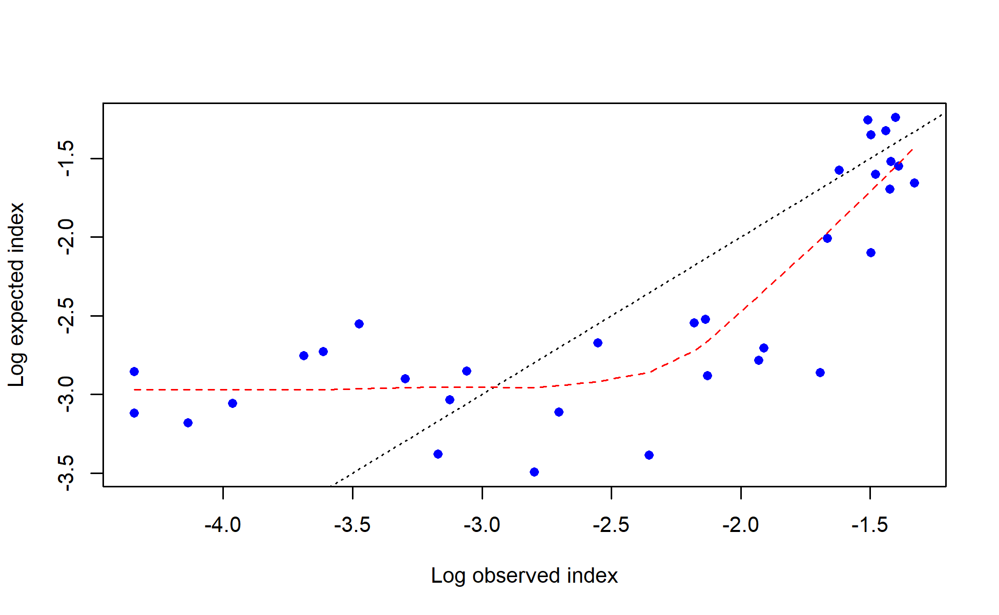
log(observed) vs. log(expected) index values with smoother for IDX15_CAN_GSL
file: index6_log_obs_vs_exp_IDX15_CAN_GSL.png
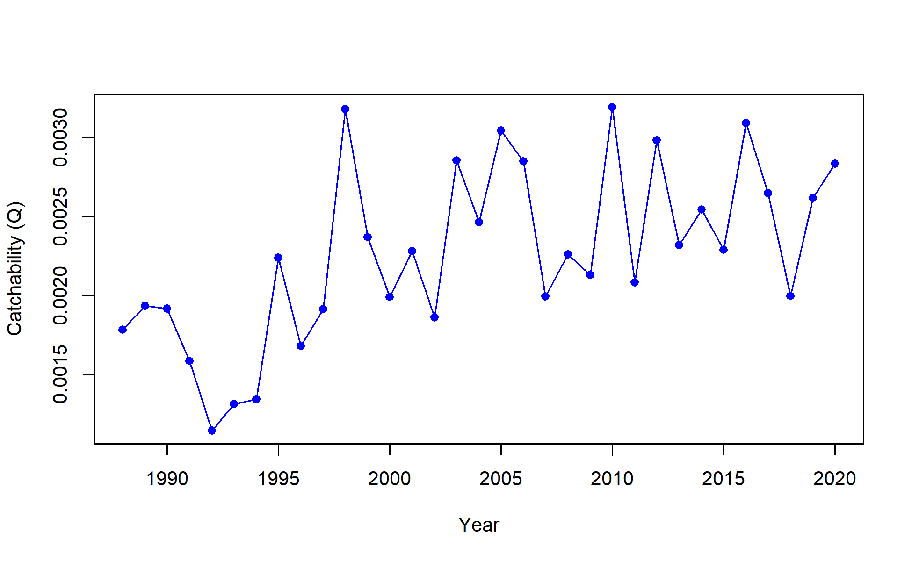
Timeseries of catchability for IDX15_CAN_GSL
file: index7_timevarying_q_IDX15_CAN_GSL.png
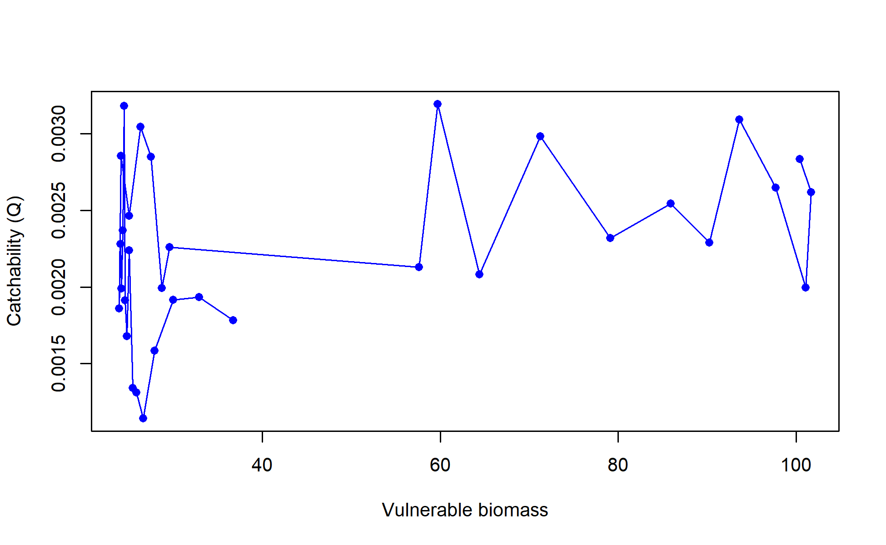
Catchability vs. vulnerable biomass for fleet IDX15_CAN_GSL
This plot should illustrate curvature of nonlinear catchability relationship
or reveal patterns associated with random-walk catchability.
file: index8_q_vs_vuln_bio_IDX15_CAN_GSL.png
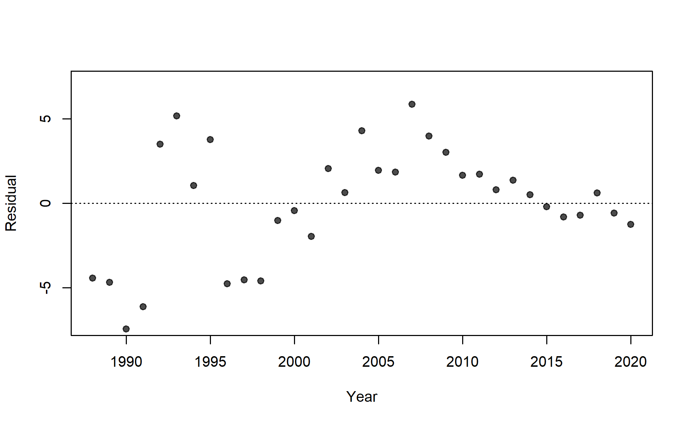
Residuals of fit to index for IDX15_CAN_GSL.
Values are (log(Obs) - log(Exp))/SE where SE is the total standard error including any estimated additional uncertainty.
file: index10_resids_SE_total_IDX15_CAN_GSL.png
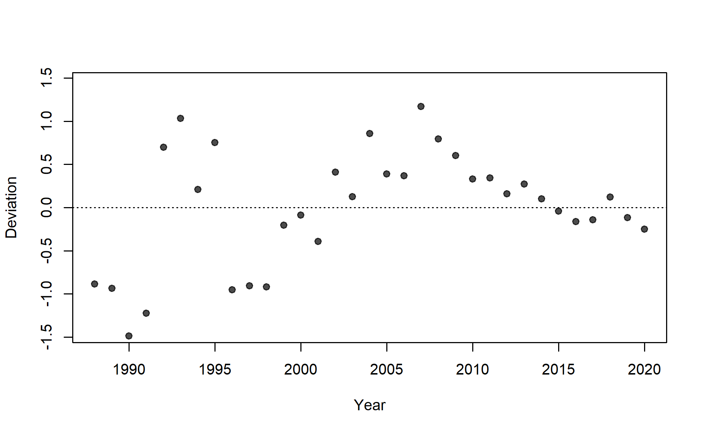
Deviations for fit to index for IDX15_CAN_GSL.
Values are log(Obs) - log(Exp) and thus independent of index uncertainty.
file: index12_resids_SE_total_IDX15_CAN_GSL.png

Index data for IDX16_CAN_ACOUSTIC. Lines indicate 95% uncertainty interval around index values based on the model assumption of lognormal error. Thicker lines (if present) indicate input uncertainty before addition of estimated additional uncertainty parameter.
file: index1_cpuedata_IDX16_CAN_ACOUSTIC.png
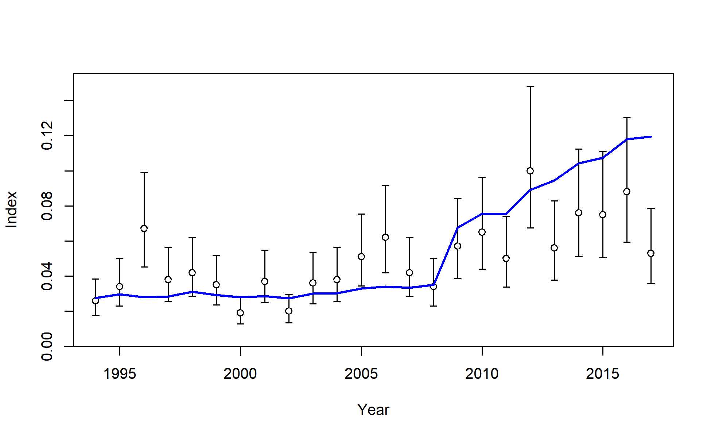
Fit to index data for IDX16_CAN_ACOUSTIC. Lines indicate 95% uncertainty interval around index values based on the model assumption of lognormal error. Thicker lines (if present) indicate input uncertainty before addition of estimated additional uncertainty parameter.
file: index2_cpuefit_IDX16_CAN_ACOUSTIC.png
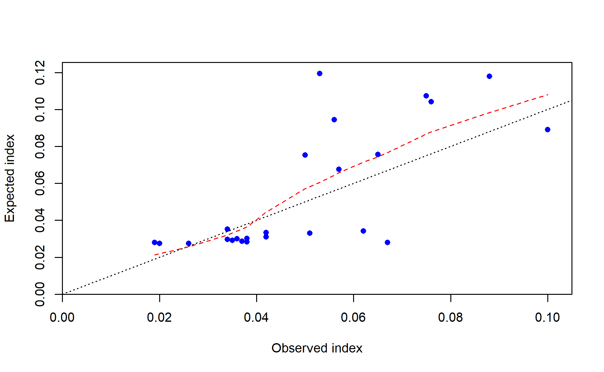
Observed vs. expected index values with smoother for IDX16_CAN_ACOUSTIC
file: index3_obs_vs_exp_IDX16_CAN_ACOUSTIC.png

Log index data for IDX16_CAN_ACOUSTIC. Lines indicate 95% uncertainty interval around index values based on the model assumption of lognormal error. Thicker lines (if present) indicate input uncertainty before addition of estimated additional uncertainty parameter.
file: index4_logcpuedata_IDX16_CAN_ACOUSTIC.png
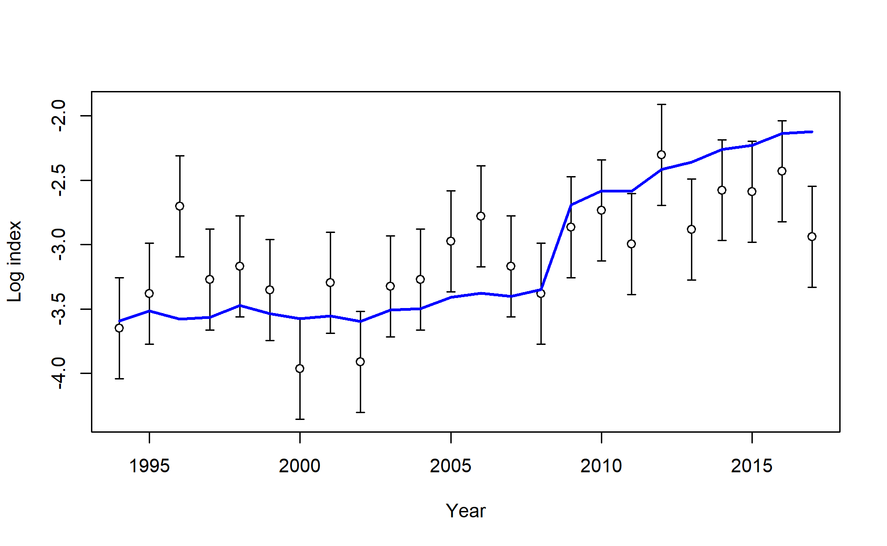
Fit to log index data on log scale for IDX16_CAN_ACOUSTIC. Lines indicate 95% uncertainty interval around index values based on the model assumption of lognormal error. Thicker lines (if present) indicate input uncertainty before addition of estimated additional uncertainty parameter.
file: index5_logcpuefit_IDX16_CAN_ACOUSTIC.png
log(observed) vs. log(expected) index values with smoother for IDX16_CAN_ACOUSTIC
file: index6_log_obs_vs_exp_IDX16_CAN_ACOUSTIC.png
Timeseries of catchability for IDX16_CAN_ACOUSTIC
file: index7_timevarying_q_IDX16_CAN_ACOUSTIC.png
Catchability vs. vulnerable biomass for fleet IDX16_CAN_ACOUSTIC
This plot should illustrate curvature of nonlinear catchability relationship
or reveal patterns associated with random-walk catchability.
file: index8_q_vs_vuln_bio_IDX16_CAN_ACOUSTIC.png
Residuals of fit to index for IDX16_CAN_ACOUSTIC.
Values are (log(Obs) - log(Exp))/SE where SE is the total standard error including any estimated additional uncertainty.
file: index10_resids_SE_total_IDX16_CAN_ACOUSTIC.png
Deviations for fit to index for IDX16_CAN_ACOUSTIC.
Values are log(Obs) - log(Exp) and thus independent of index uncertainty.
file: index12_resids_SE_total_IDX16_CAN_ACOUSTIC.png

Index data for IDX17_GOMlarval. Lines indicate 95% uncertainty interval around index values based on the model assumption of lognormal error. Thicker lines (if present) indicate input uncertainty before addition of estimated additional uncertainty parameter.
file: index1_cpuedata_IDX17_GOMlarval.png

Fit to index data for IDX17_GOMlarval. Lines indicate 95% uncertainty interval around index values based on the model assumption of lognormal error. Thicker lines (if present) indicate input uncertainty before addition of estimated additional uncertainty parameter.
file: index2_cpuefit_IDX17_GOMlarval.png
Observed vs. expected index values with smoother for IDX17_GOMlarval
file: index3_obs_vs_exp_IDX17_GOMlarval.png

Log index data for IDX17_GOMlarval. Lines indicate 95% uncertainty interval around index values based on the model assumption of lognormal error. Thicker lines (if present) indicate input uncertainty before addition of estimated additional uncertainty parameter.
file: index4_logcpuedata_IDX17_GOMlarval.png
Fit to log index data on log scale for IDX17_GOMlarval. Lines indicate 95% uncertainty interval around index values based on the model assumption of lognormal error. Thicker lines (if present) indicate input uncertainty before addition of estimated additional uncertainty parameter.
file: index5_logcpuefit_IDX17_GOMlarval.png
log(observed) vs. log(expected) index values with smoother for IDX17_GOMlarval
file: index6_log_obs_vs_exp_IDX17_GOMlarval.png
Residuals of fit to index for IDX17_GOMlarval.
Values are (log(Obs) - log(Exp))/SE where SE is the total standard error including any estimated additional uncertainty.
file: index10_resids_SE_total_IDX17_GOMlarval.png
Deviations for fit to index for IDX17_GOMlarval.
Values are log(Obs) - log(Exp) and thus independent of index uncertainty.
file: index12_resids_SE_total_IDX17_GOMlarval.png

Index data for IDX19_oceanographic. Lines indicate 95% uncertainty interval around index values based on the model assumption of lognormal error. Thicker lines (if present) indicate input uncertainty before addition of estimated additional uncertainty parameter.
file: index1_cpuedata_IDX19_oceanographic.png
Fit to index data for IDX19_oceanographic. Lines indicate 95% uncertainty interval around index values based on the model assumption of lognormal error. Thicker lines (if present) indicate input uncertainty before addition of estimated additional uncertainty parameter.
file: index2_cpuefit_IDX19_oceanographic.png
Observed vs. expected index values with smoother for IDX19_oceanographic
file: index3_obs_vs_exp_IDX19_oceanographic.png

Log index data for IDX19_oceanographic. Lines indicate 95% uncertainty interval around index values based on the model assumption of lognormal error. Thicker lines (if present) indicate input uncertainty before addition of estimated additional uncertainty parameter.
file: index4_logcpuedata_IDX19_oceanographic.png
Fit to log index data on log scale for IDX19_oceanographic. Lines indicate 95% uncertainty interval around index values based on the model assumption of lognormal error. Thicker lines (if present) indicate input uncertainty before addition of estimated additional uncertainty parameter.
file: index5_logcpuefit_IDX19_oceanographic.png
log(observed) vs. log(expected) index values with smoother for IDX19_oceanographic
file: index6_log_obs_vs_exp_IDX19_oceanographic.png
Residuals of fit to index for IDX19_oceanographic.
Values are (log(Obs) - log(Exp))/SE where SE is the total standard error including any estimated additional uncertainty.
file: index10_resids_SE_total_IDX19_oceanographic.png
Deviations for fit to index for IDX19_oceanographic.
Values are log(Obs) - log(Exp) and thus independent of index uncertainty.
file: index12_resids_SE_total_IDX19_oceanographic.png

Index data for IDX20_VAST_Joint. Lines indicate 95% uncertainty interval around index values based on the model assumption of lognormal error. Thicker lines (if present) indicate input uncertainty before addition of estimated additional uncertainty parameter.
file: index1_cpuedata_IDX20_VAST_Joint.png
Fit to index data for IDX20_VAST_Joint. Lines indicate 95% uncertainty interval around index values based on the model assumption of lognormal error. Thicker lines (if present) indicate input uncertainty before addition of estimated additional uncertainty parameter.
file: index2_cpuefit_IDX20_VAST_Joint.png
Observed vs. expected index values with smoother for IDX20_VAST_Joint
file: index3_obs_vs_exp_IDX20_VAST_Joint.png

Log index data for IDX20_VAST_Joint. Lines indicate 95% uncertainty interval around index values based on the model assumption of lognormal error. Thicker lines (if present) indicate input uncertainty before addition of estimated additional uncertainty parameter.
file: index4_logcpuedata_IDX20_VAST_Joint.png
Fit to log index data on log scale for IDX20_VAST_Joint. Lines indicate 95% uncertainty interval around index values based on the model assumption of lognormal error. Thicker lines (if present) indicate input uncertainty before addition of estimated additional uncertainty parameter.
file: index5_logcpuefit_IDX20_VAST_Joint.png
log(observed) vs. log(expected) index values with smoother for IDX20_VAST_Joint
file: index6_log_obs_vs_exp_IDX20_VAST_Joint.png
Residuals of fit to index for IDX20_VAST_Joint.
Values are (log(Obs) - log(Exp))/SE where SE is the total standard error including any estimated additional uncertainty.
file: index10_resids_SE_total_IDX20_VAST_Joint.png
Deviations for fit to index for IDX20_VAST_Joint.
Values are log(Obs) - log(Exp) and thus independent of index uncertainty.
file: index12_resids_SE_total_IDX20_VAST_Joint.png
Standardized indices overlaid. Each index is rescaled to have mean observation = 1.0.
file: index9_standcpueall.png
{kind=link}
{kind=link}
{kind=link}
{kind=link}
{kind=link}
{kind=link}
{kind=link}
{kind=link}
{kind=link}
{kind=link}
{kind=link}
{kind=link}
{kind=link}
{kind=link}
{kind=link}
{kind=link}
{kind=link}
{kind=link}
{kind=link}
{kind=link}
{kind=link}
{kind=link}
{kind=link}
{kind=link}
{kind=link}
{kind=link}
{kind=link}
{kind=link}
{kind=link}
{kind=link}
{kind=link}
{kind=link}
{kind=link}
{kind=link}
{kind=link}
{kind=link}
{kind=link}
{kind=link}
{kind=link}
{kind=link}
{kind=link}
{kind=link}
{kind=link}
{kind=link}
{kind=link}
{kind=link}
{kind=link}
{kind=link}
{kind=link}
{kind=link}
{kind=link}
{kind=link}
{kind=link}
{kind=link}
{kind=link}
{kind=link}
{kind=link}
{kind=link}
{kind=link}
{kind=link}
{kind=link}
{kind=link}
{kind=link}
{kind=link}
{kind=link}
{kind=link}
{kind=link}
{kind=link}
{kind=link}
{kind=link}
{kind=link}
{kind=link}
{kind=link}
{kind=link}